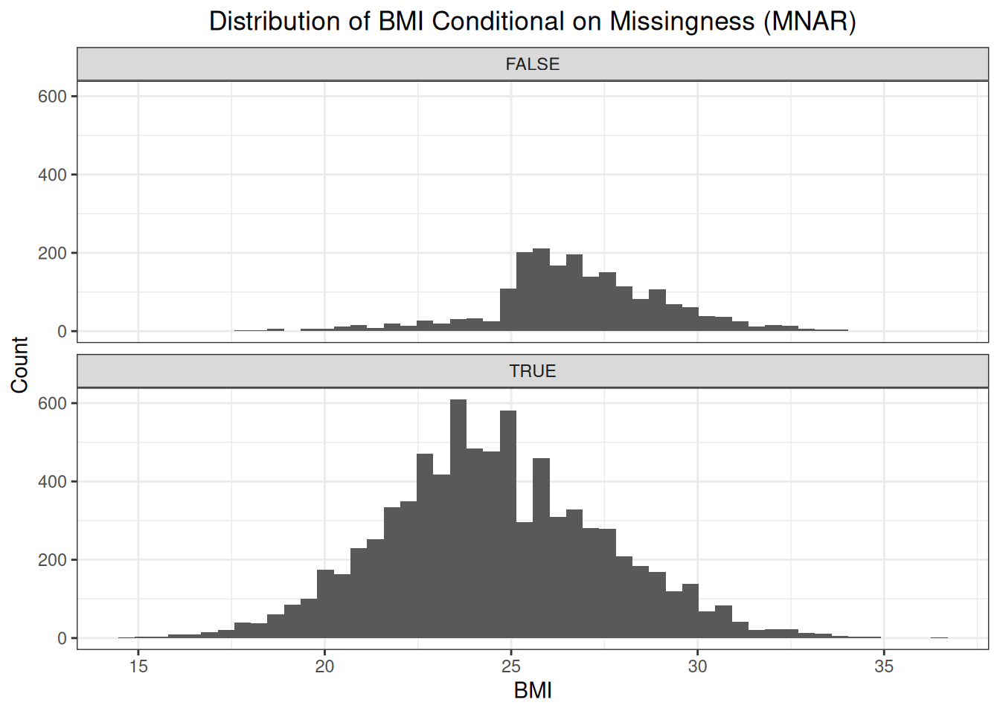

7 Missingness Not At Random
With missingness not at random, the probability of missingness is not affected by a factor that is recorded, but is affected by factors that are not recorded or even by the outcome itself. For this missingness pattern, we will not focus on the weight of the patient but on the patient’s BMI. The distribution of BMI is the same for women and for men:

However, we could argue the following: if a patient visits the GP, then the GP will more likely weigh the patient if he/she seems obese. We could make the same argument for underweight patients, but for the sake of illustration, we will assume the likelihood of being weighted is higher for obese patients. Based on BMI, we can classify patients as:
- underweight: \(BMI < 18.5\)
- normal: \(18.5 \leq BMI \leq 24.9\)
- overweight: \(25 \leq BMI \leq 29.9\)
- obese: \(30 < BMI\).
We assume the following conditional probabilities of missingness:
# Define conditional probabilities of missingness
p_missing_uw <- 0.95
p_missing_nw <- 0.85
p_missing_ow <- 0.75
p_missing_ob <- 0.65# Classify patients based on their BMI
weights <- weights %>%
dplyr::mutate(
bmi_class = dplyr::case_when(
bmi <= 18.5 ~ "uw",
dplyr::between(bmi, 18.5, 25.0) ~ "nw",
dplyr::between(bmi, 25.0, 29.9) ~ "ow",
bmi >= 29.9 ~ "ob"
)
)fd_bmi_classes_df <- weights %>%
dplyr::group_by(bmi_class) %>%
dplyr::summarize(n = n())
fd_bmi_classes <- fd_bmi_classes_df$n
names(fd_bmi_classes) <- fd_bmi_classes_df$bmi_classset.seed(123)
idxs <- c(
sample(
x = weights[weights$bmi_class == "uw",, drop = F]$idx,
size = round(fd_bmi_classes["uw"] * p_missing_uw)
),
sample(
x = weights[weights$bmi_class == "nw",, drop = F]$idx,
size = round(fd_bmi_classes["nw"] * p_missing_nw)
),
sample(
x = weights[weights$bmi_class == "ow",, drop = F]$idx,
size = round(fd_bmi_classes["ow"] * p_missing_ow)
),
sample(
x = weights[weights$bmi_class == "ob",, drop = F]$idx,
size = round(fd_bmi_classes["ob"] * p_missing_ob)
)
)
weights["mnar"] <- weights$idx %in% idxsFirst, let’s have a look at the distribution of BMI conditional on missingness.

The distribution of the missing BMI values is shifted to the left compared to the distribution of the observed BMI values. This makes sense as the probability of the weight being recorded, and thus the BMI being calculated, is bigger as a patient tends to be overweight or obese.
We know from our simulation that sex does not influence the probability of missigness. Nor is there any other factor that influences the probability of missingness, only the outcome itself. Therefore, conditioning on sex, will not eliminate the difference in distribution between observed and missing values.

Again, we see that for each sex, the distribution of missing values is shifted to the left compared to the distribution of observed values. This follows from the fact that sex does not affect the probability of missingness. However, if we conditioning on the BMI class (in other words, on the outcome itself), we see that the difference between the distributions disappears.
ggplot(weights, aes(x = bmi)) +
geom_histogram(bins = 50) +
facet_grid(rows = vars(mnar), cols = vars(bmi_class)) +
theme_bw() +
labs(
title = "Distribution of BMI conditioning on BMI class and missingness",
x = "Weight (kg)", y = "Count"
)